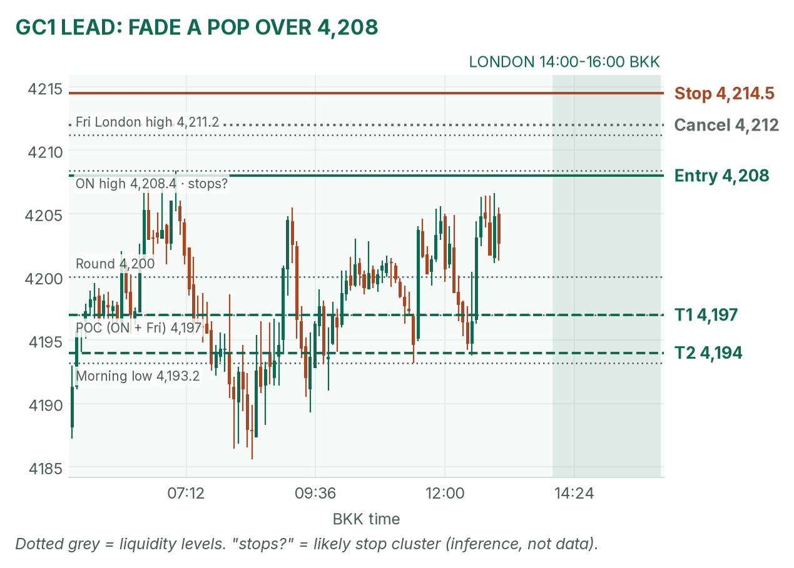
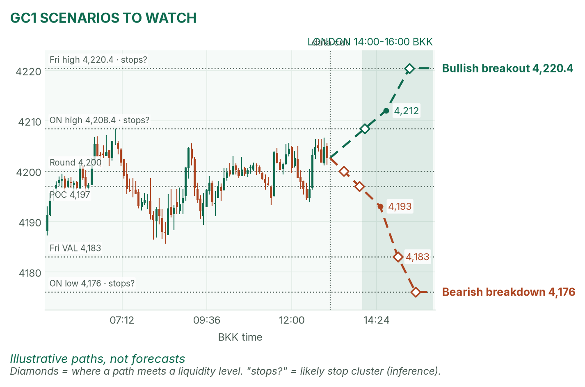
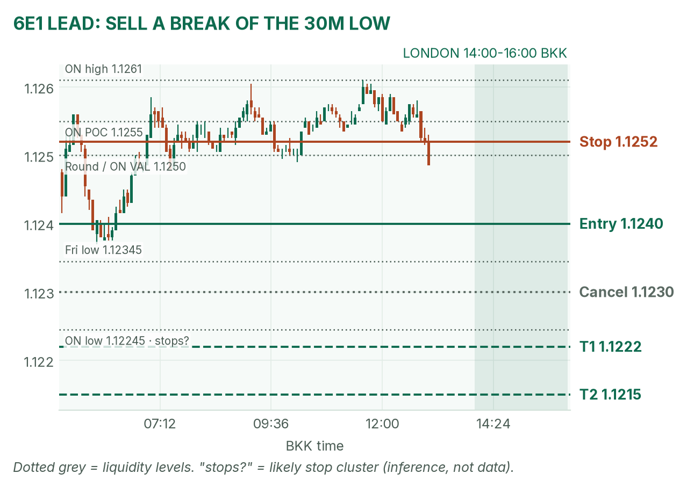
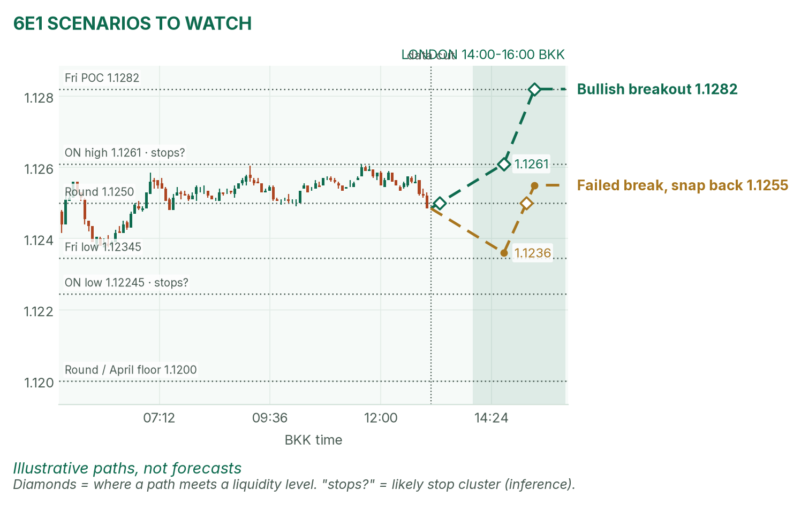

Gold is boxed under 4,208. The euro is sagging into the open.
Window 14:00–16:00 BKK, London's first two hours. Data cut 13:05 BKK: GC 4,202.6, 6E 1.12485 (TopstepX Z26). Levels only. Ideas, not advice.
Summary
GC: fade a failed pop above 4,208 after 14:30. Sell 4,207–4,210, stop 4,214.5, targets 4,197 and 4,194. About 50%.
6E: sell a 5-minute close below the 14:00–14:30 range low, near 1.1240. Stop 1.1252, targets 1.1222 and 1.1215. About 42%.
No major data inside the window. French headlines are the event risk.
Flat by 16:00, no matter what.
The market story
Yields fell: the 10-year is 5.06%, down 3.8 basis points, after its biggest weekly drop in eight months. Yields fell, so bond prices rose, and gold's opportunity cost (the interest you give up holding metal) shrank. That is why gold is back at 4,200. But it sits under its 20-day average (4,221), so the bigger trend is still down.
The euro has a France problem. After the weekend riots, the spread (the gap between two yields) between French and German 10-year bonds topped 150 basis points, the widest since 2011. Investors are charging France extra, and that weighs on the euro. 6E sits at its morning low.
How I read it: gold is a range to fade, the euro is a breakout to follow.
News (BKK)
Time
Event
Forecast
Prior
Read
13:00
ECB's Elderson speaks (Manila)
–
–
Before the window. Low impact.
15:00
Swiss sight deposits (weekly)
–
CHF 456bn
Low impact.
19:30
Canada CPI y/y (Sep)
n/a
3.0%
After the window.
No-trade zone: 14:55–15:02. French headlines: worse news lifts gold and sinks 6E; calm lets 6E bounce to 1.1261.
Levels to watch
Level
GC
6E
Overnight high
4,208.4
1.1261
Overnight POC (busiest price)
4,197
1.1255
Overnight value area
4,194–4,204
1.1250–1.1259
Overnight low (05:00 open print)
4,176
1.12245
Friday high / low
4,220.4 / 4,167.5
1.1296 / 1.12345
Friday POC
4,197
1.1282
4h 20 / 50 EMA
4,188 / 4,188
1.1246 / 1.1249
Typical window range (median / 80th pct, 20 days)
17 / 27 pts
19 / 31 pips
Gold (GC1)
Bias: neutral, a range. The daily trend is down (price under the 20-day average), the 4-hour chart is up (price above both EMAs), and both overnight and Friday traded most volume at 4,197. Two sessions agreeing on a POC tends to pull price back to it.
The trade: mean-reversion fade
Entry
4,207–4,210 (plan 4,208), after 14:30: a poke above the range high and 4,208.4, then a 5m close back below 4,208
Stop
4,214.5: above Friday's London high (4,211.2) and the stops likely parked over 4,208.4
Targets
1R partial 4,201.5 · T1 4,197, the POC (1.69R) · T2 4,194, the value-area low (2.15R)
Cancel
A 15m close above 4,212 before entry, or no push to 4,207 by 15:30
Probability
~50%, an estimate. Basis: London gold ranges mostly failed back to the POC in my Aug–Oct study (not significant); the 11-point run to T1 is two-thirds of a typical window.
Why: a tight stop behind a real ceiling, aiming at the busiest price. The 14:00–14:30 range sets the trigger. No pop above 4,207, no trade. April partly agrees: lower yields help gold, but she notes it keeps failing at 4,200.

GC 5-minute bars to 13:05 BKK, window shaded. The 07:00 high (4,208.4) is the ceiling the fade leans on.

The other two setups as illustrative paths; diamonds mark liquidity touches.
Scenarios to watch
Bullish breakout: two 15m closes above 4,212, ideally with yields slipping. Aims for Friday's high, 4,220.4.
Bearish breakdown: a 15m close below 4,193 (the morning low). Aims for 4,183, then 4,176.
Euro (6E1)
Bias: mildly bearish. The euro sits under its 20-day average (1.1317) and has slid from 1.1261 to the morning low. Only a softer dollar (DXY 101.80) props it up. April's floor is 1.1200.
The trade: bearish range breakout
Entry
1.1238–1.1242 (plan 1.1240), on a 5m close below the 14:00–14:30 range low
Stop
1.1252: back above 1.1250, the round number and overnight value-area low
Targets
1R partial 1.1228 · T1 1.1222, just past the overnight low's likely stops (1.5R) · T2 1.1215 (2.08R)
Cancel
The range low is already under 1.1230 (move spent), or a 5m close above 1.1252 before entry
Probability
~42%, an estimate. Basis: euro London breakouts averaged +0.31R in my study (26 sessions, not significant); 18 pips (a pip is 0.0001) to T1 is about a full typical window.
Why: with the daily trend and the France story, and the stop sits above a clean round number. April partly agrees: she sees the dollar and France cancelling out.

6E 5-minute bars to 13:05 BKK. The overnight low (1.12245) was one opening print, a thin spot stops can run through.

Breakout and snap-back paths.
Scenarios to watch
Bullish breakout: a 5m close above the range high and back over 1.1255. Aims for 1.1261, then Friday's POC at 1.1282.
Failed break, snap back: a dip under the range low that reclaims 1.1250 within 15 minutes. Aims for 1.1255.
NQ (not traded in London): 29,792.75, up 1.37% from Friday's close.
Before you click
ORB bases. GC London: 14:00–14:30 range, fade to POC. 6E London: 14:00–14:30 range, trade breakouts. NY bases are on the NY sheet.
Checklist. 1) Room to today's max loss? 2) Within daily rules? 3) No release within 30 minutes? 4) Agrees with the bias? 5) At a marked level? 6) Setup tagged? 7) Entry, stop, 1R partial, target set? 8) Calm, not chasing?
Reset (60 seconds). Hands off the mouse. Breathe in 4, hold 4, out 6, five times. Name the feeling in one word. Say the plan aloud. "Eager" or "frustrated"? Wait 5 minutes.